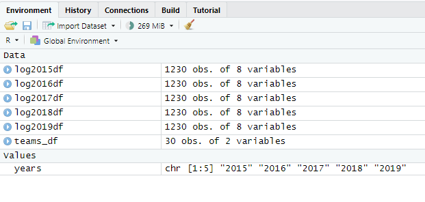

Chapter 3 Model
3.1 Scraping Game Data
3.1.1 Season Gamelogs
Here, I create a dataframe for each season from 2014/15 to 2018/19 (named 2015:2019 respectively), each of which contains every regular season game for that year. Each row is one game. These years were selected because they were “normal”, aka 1230 total games without bubbles, wildcats, etc. The source data is basketball-reference.com.
Load necessary libraries
#load libraries#
library(tidyverse)
library(rvest)
library(janitor)
library(runner)
library(lubridate)
library(magrittr)Create a reference table of team names and abbreviations
#load teams and put into teams_df#
teams_full <- c("Atlanta Hawks", "Boston Celtics", "Brooklyn Nets", "Charlotte Hornets", "Chicago Bulls", "Cleveland Cavaliers", "Dallas Mavericks", "Denver Nuggets", "Detroit Pistons", "Golden State Warriors", "Houston Rockets", "Indiana Pacers", "Los Angeles Clippers", "Los Angeles Lakers", "Memphis Grizzlies", "Miami Heat", "Milwaukee Bucks", "Minnesota Timberwolves", "New Orleans Pelicans", "New York Knicks", "Oklahoma City Thunder", "Orlando Magic", "Philadelphia 76ers", "Phoenix Suns", "Portland Trail Blazers", "Sacramento Kings", "San Antonio Spurs", "Toronto Raptors", "Utah Jazz", "Washington Wizards")
teams_abr <- c("ATL", "BOS", "BRK", "CHO", "CHI", "CLE", "DAL", "DEN", "DET", "GSW", "HOU", "IND", "LAC", "LAL", "MEM", "MIA", "MIL", "MIN", "NOP", "NYK", "OKC", "ORL", "PHI", "PHO", "POR", "SAC", "SAS", "TOR", "UTA", "WAS")
teams_df <- data.frame(teams_full, teams_abr)
rm(teams_full,teams_abr)
head(teams_df)## teams_full teams_abr
## 1 Atlanta Hawks ATL
## 2 Boston Celtics BOS
## 3 Brooklyn Nets BRK
## 4 Charlotte Hornets CHO
## 5 Chicago Bulls CHI
## 6 Cleveland Cavaliers CLELoops for scraping from basketball-reference
#load variables for scrape/looping#
years <- c("2015","2016","2017","2018","2019")
months <- c("october","november","december","january","february","march","april","may","june")
#loop to scrape each full year into its own df#
for(year in years){
gamelog_df <- data.frame()
for(month in months){
url <- paste0("https://www.basketball-reference.com/leagues/NBA_",year,"_games-", month, ".html")
webpage <- read_html(url)
table = webpage %>% html_nodes("table") %>% html_table() %>% .[[1]]
gamelog_df <- rbind(gamelog_df, table)}
assign(paste0("log",year,"df"), gamelog_df)}
rm(gamelog_df, table, webpage,month, months, url, year)Loop to clean up each individual year’s gamelog
#loop to clean up each year's df
for (year in years){
temp_df <- get(paste0("log",year,"df"))
temp_df <- temp_df[1:1230, c(1, 3:6)] %>%
set_colnames(c("date","away_team","away_pts","home_team","home_pts")) %>%
mutate(game_id = as.numeric(year)*100000 + (1:1230),
season = as.numeric(paste0(year)),
date = mdy(date),
away_pts = as.numeric(away_pts),
home_pts = as.numeric(home_pts),
game_outcome = ifelse(home_pts > away_pts,1,0)) %>%
select(game_id,date,season,home_team,away_team,home_pts,away_pts,game_outcome)
assign(paste0("log",year,"df"), temp_df)
}
rm(temp_df, year)> print(head(log2015df))
# A tibble: 6 x 8
game_id date season home_team away_team home_pts away_pts game_outcome
<dbl> <date> <dbl> <chr> <chr> <dbl> <dbl> <dbl>
1 201500001 2014-10-28 2015 New Orleans Pelicans Orlando Magic 101 84 1
2 201500002 2014-10-28 2015 San Antonio Spurs Dallas Mavericks 101 100 1
3 201500003 2014-10-28 2015 Los Angeles Lakers Houston Rockets 90 108 0
4 201500004 2014-10-29 2015 Charlotte Hornets Milwaukee Bucks 108 106 1
5 201500005 2014-10-29 2015 Indiana Pacers Philadelphia 76ers 103 91 1
6 201500006 2014-10-29 2015 Toronto Raptors Atlanta Hawks 109 102 1
> print(tail(log2019df), n=5)
# A tibble: 6 x 8
game_id date season home_team away_team home_pts away_pts game_outcome
<dbl> <date> <dbl> <chr> <chr> <dbl> <dbl> <dbl>
1 201901225 2019-04-10 2019 New York Knicks Detroit Pistons 89 115 0
2 201901226 2019-04-10 2019 Philadelphia 76ers Chicago Bulls 125 109 1
3 201901227 2019-04-10 2019 San Antonio Spurs Dallas Mavericks 105 94 1
4 201901228 2019-04-10 2019 Denver Nuggets Minnesota Timberwolves 99 95 1
5 201901229 2019-04-10 2019 Los Angeles Clippers Utah Jazz 143 137 1EXPECTED ENVIRONMENT:
library(knitr)
knitr::include_graphics('~\\R\\bookdown-demo-main\\bookdown-demo-main\\_book\\bookdown-demo_files\\Model_31_environment.png')
well this doesn’t work (slash make sure this works and if it does save figures to the same place)

a screenshot of the environment
3.1.2 Team Gamelogs
In order to ultimately pull each team’s stats going into each game, I must create a dataframe of each team’s 82-game gamelog for each season - every game in this df is duplicated (once from the perspective of each team playing), so the full df should be double that of the total number of games (1230 g/yr * 5 yrs * 2 = 12300 rows). The source data is again basketball-reference.
This loops gets the gamelog for each team within each year and stitches together at the end (first all the teams into one individual year, then all the years into a df called teamglfull)
for (year in years){
teamyeargl <- data.frame()
for (team in teams_df$teams_abr){
url <- paste0("https://www.basketball-reference.com/teams/",team,"/",year,"/gamelog-advanced")
webpage <- read_html(url)
table2 = webpage %>% html_nodes("table") %>% html_table() %>% .[[1]]
testdf <- table2[2:8]
testdf[1,1] = 'gID'
testdf[1,3] = 'H/A'
testdf[1,6] = 'PTS'
testdf[1,7] = 'oPTS'
test2df <- cbind(testdf, table2[9:18], table2[20:23])
test3df <- table2[25:28] %>% row_to_names(row_number = 1) %>%
rename_with( ~ paste0("o", .x))
test3df <- rbind(names(test3df),test3df)
table2 <- cbind(test2df, test3df) %>% row_to_names(row_number = 1)
rm(testdf,test2df,test3df)
#this is so messy, but may be the only way since there are unnamed columns
table2$gID <- as.numeric(table2$gID)
table2 <- table2 %>% filter(table2$gID > 0) %>%
mutate_at(vars(colnames(table2[-c(2:5)])), as.numeric) %>%
mutate(`H/A` = case_when(`H/A` == '@' ~ 'A', TRUE ~ 'H'))
#cbind all table1, table2, testtable into table 3, assign to team gl df (should be 75 columns, 77 after adding teamname and seasonyear)
table2 <- table2 %>% mutate(Team = team, .before = 1) %>% mutate(Season = year, .after = 1)
teamyeargl <- rbind(teamyeargl,table2)
#assign(paste0(team,year,"gl_df"), table3)
}
assign(paste0("teamgl",year,"_df"), teamyeargl)
rm(table2,webpage,team,url)
}
rm(year,teamyeargl)Combine the individual teamyeargls into one big reference df called teamglfull
#makes a df of teamgamelogs called teamglfull
teamglfull <- rbind(teamgl2015_df,teamgl2016_df,teamgl2017_df,teamgl2018_df,teamgl2019_df)
teamglfull$Date <- as.Date(teamglfull$Date)
rm(teamgl2015_df,teamgl2016_df,teamgl2017_df,teamgl2018_df,teamgl2019_df)> print(head(teamglfull))
# A tibble: 6 x 27
Team Season gID Date `H/A` Opp `W/L` PTS oPTS ORtg DRtg Pace FTr `3PAr` `TS%` `TRB%` `AST%`
<chr> <dbl> <dbl> <date> <chr> <chr> <chr> <dbl> <dbl> <dbl> <dbl> <dbl> <dbl> <dbl> <dbl> <dbl> <dbl>
1 ATL 2015 1 2014-10-29 A TOR L 102 109 109. 117. 93.5 0.213 0.275 0.583 46.7 65
2 ATL 2015 2 2014-11-01 H IND W 102 92 110 99.2 92.7 0.478 0.29 0.611 45.7 74.3
3 ATL 2015 3 2014-11-05 A SAS L 92 94 97.3 99.5 94.5 0.12 0.272 0.475 42.5 68.4
4 ATL 2015 4 2014-11-07 A CHO L 119 122 105. 107. 94.1 0.28 0.355 0.57 42.7 65.1
5 ATL 2015 5 2014-11-08 H NYK W 103 96 116. 108. 88.9 0.444 0.272 0.532 48.2 54.5
6 ATL 2015 6 2014-11-10 A NYK W 91 85 104 97.1 87.5 0.394 0.38 0.546 48.7 74.1
# ... with 10 more variables: `STL%` <dbl>, `BLK%` <dbl>, `eFG%` <dbl>, `TOV%` <dbl>, `ORB%` <dbl>,
# `FT/FGA` <dbl>, `oeFG%` <dbl>, `oTOV%` <dbl>, `oDRB%` <dbl>, `oFT/FGA` <dbl>
> print(tail(teamglfull))
# A tibble: 6 x 27
Team Season gID Date `H/A` Opp `W/L` PTS oPTS ORtg DRtg Pace FTr `3PAr` `TS%` `TRB%` `AST%`
<chr> <dbl> <dbl> <date> <chr> <chr> <chr> <dbl> <dbl> <dbl> <dbl> <dbl> <dbl> <dbl> <dbl> <dbl> <dbl>
1 WAS 2019 77 2019-03-29 A UTA L 124 128 118. 122 105. 0.224 0.378 0.576 48.8 66.7
2 WAS 2019 78 2019-03-31 A DEN W 95 90 95.4 90.4 99.6 0.217 0.261 0.471 48.6 64.9
3 WAS 2019 79 2019-04-03 H CHI L 114 115 106. 107. 108. 0.268 0.278 0.526 44.3 53.3
4 WAS 2019 80 2019-04-05 H SAS L 112 129 119. 137. 94.3 0.25 0.364 0.573 44.7 52.4
5 WAS 2019 81 2019-04-07 A NYK L 110 113 116. 120. 94.5 0.175 0.33 0.496 53.8 55.8
6 WAS 2019 82 2019-04-09 H BOS L 110 116 108. 114. 102. 0.186 0.402 0.524 53.7 68.3
# ... with 10 more variables: `STL%` <dbl>, `BLK%` <dbl>, `eFG%` <dbl>, `TOV%` <dbl>, `ORB%` <dbl>,
# `FT/FGA` <dbl>, `oeFG%` <dbl>, `oTOV%` <dbl>, `oDRB%` <dbl>, `oFT/FGA` <dbl>
> colnames(teamglfull)
[1] "Team" "Season" "gID" "Date" "H/A" "Opp" "W/L" "PTS" "oPTS" "ORtg" "DRtg"
[12] "Pace" "FTr" "3PAr" "TS%" "TRB%" "AST%" "STL%" "BLK%" "eFG%" "TOV%" "ORB%"
[23] "FT/FGA" "oeFG%" "oTOV%" "oDRB%" "oFT/FGA"Expected output: teamglfull (12300 x 27) that has each team’s gamelog sorted by season. If running from the beginning, should now have the logdfs, teamglfull, teams_df, years.
3.2 Base Elo
#download the 538 historical nba elo database from https://data.fivethirtyeight.com/ or https://github.com/fivethirtyeight/data/tree/master/nba-elo, import
nbaallelo538 <- read_csv("~/R/Basketball/bets/excel bet data/nbaallelo538.csv")
View(nbaallelo538)
#pull the elo rating for each team from the 1st game of the 2015 season
check <- nbaallelo538 %>%
filter(year_id == 2015 & seasongame == 1) %>%
select(team_id,elo_i,date_game) %>%
arrange(team_id)
#checking you got all the teams
length(unique(check$team_id))
#make an elo ratings reference with the right names (should this be in teams_df instead of a new table)
team <- teams_df$teams_full
elo_rating <- check$elo_i
game_id <- c(rep(0,30))
date <- mdy(check$date_game)
nba_elo_ratings <- data.frame(team, elo_rating, game_id, date)
rm(team, elo_rating, game_id, date)
rm(check,nbaallelo538)
#set the elo home advantage (fivethirtyeight's is 100)
h_adv <- 100
#functions to define elo calculations
calc_expected_score <- function(team_rating, opp_team_rating) {
return(1 / (1 + 10^((opp_team_rating - team_rating) / 400)))}
calc_new_rating <- function(team_rating, observed_score, expected_score, k_factor) {
return(team_rating + k_factor * (observed_score - expected_score))}
elo_prediction <- function(home_rating, away_rating){
E_home <- 1./(1 + 10 ** ((away_rating - (home_rating+h_adv)) / (400.)))
return(E_home)}
score_prediction <- function(home_rating,away_rating){
xscore <- (home_rating+h_adv - away_rating)/28
return (xscore)}
silverK <- function(MOV, elo_diff){
K_0multi <<- 20
ifelse(MOV>0,
K_0multi <<- 20*((MOV+3)**(0.8)/(7.5+0.006*(elo_diff))),
K_0multi <<- 20*((-MOV+3)**(0.8)/(7.5+0.006*(-elo_diff))))
return(K_0multi)}
for (year in years) {
logdf <- get(paste0("log",year,"df"))
#add new columns for elo ratings to fill
logdf <- logdf %>% mutate(home_elo=0,away_elo=0,
h_w_prob=0,a_w_prob=0,
h_xscorediff=0,a_xscorediff=0)
for (game_i in 1:nrow(logdf)) {
home_team <- logdf$home_team[game_i]
away_team <- logdf$away_team[game_i]
home_win <- logdf$game_outcome[game_i]
game_id <- logdf$game_id[game_i]
home_rating <- nba_elo_ratings %>% filter(team == home_team) %>% pull(elo_rating)
away_rating <- nba_elo_ratings %>% filter(team == away_team) %>% pull(elo_rating)
logdf$home_elo[game_i] = home_rating
logdf$away_elo[game_i] = away_rating
logdf$h_w_prob[game_i] = elo_prediction(home_rating, away_rating)
logdf$a_w_prob[game_i] = 1 - elo_prediction(home_rating, away_rating)
logdf$h_xscorediff[game_i] = score_prediction(home_rating, away_rating)
logdf$a_xscorediff[game_i] = -score_prediction(home_rating, away_rating)
#get new Kfactor
MOV <- logdf$home_pts[game_i] - logdf$away_pts[game_i]
elo_diff <- logdf$home_elo[game_i] - logdf$away_elo[game_i]
K_new <- silverK(MOV, elo_diff)
# Now get their new ratings:
new_home_rating <- calc_new_rating(home_rating, home_win, calc_expected_score(home_rating + h_adv, away_rating), K_new)
new_away_rating <- calc_new_rating(away_rating, 1 - home_win, calc_expected_score(away_rating, home_rating + h_adv), K_new)
# Update elo table with new ratings, game_id, and date:
nba_elo_ratings$elo_rating[nba_elo_ratings$team == home_team] = new_home_rating
nba_elo_ratings$elo_rating[nba_elo_ratings$team == away_team] = new_away_rating
nba_elo_ratings$game_id[nba_elo_ratings$team == home_team] = logdf$game_id[game_i]
nba_elo_ratings$game_id[nba_elo_ratings$team == away_team] = logdf$game_id[game_i]
nba_elo_ratings$date[nba_elo_ratings$team == home_team] = logdf$date[game_i]
nba_elo_ratings$date[nba_elo_ratings$team == away_team] = logdf$date[game_i]
}
#assign logdf to the right year
assign(paste0("log",year,"df"), logdf)
#update nba_elo_ratings table to reflect year-to-year carry-over
nba_elo_ratings <- nba_elo_ratings %>%
mutate(elo_rating = .75*elo_rating + .25*1500)
}
allgames_df <- rbind(log2015df,log2016df,log2017df,log2018df,log2019df)
rm(log2015df,log2016df,log2017df,log2018df,log2019df)
rm(away_rating, away_team, elo_diff, game_i, game_id, home_rating, home_team, home_win, K_0multi, K_new, MOV,logdf)
rm(new_away_rating, new_home_rating, silverK, score_prediction, elo_prediction, calc_new_rating, calc_expected_score)
rm(h_adv, year)Expected output: allgames_df (6150 x 14 with the original 8 plus 2 each for elo, w_prob, xscorediff)
3.3 Verification Visualizations
The visuals in this section will be used as an initial verification (and ultimately, calibration and comparison) of the elo model. I am using https://www.cawcr.gov.au/projects/verification/#Methods_for_probabilistic_forecasts as a reference and https://projects.fivethirtyeight.com/checking-our-work/ to imitate methods. I will try to work through the most effective visualizations.
First, I will try to more or less replicate the fivethirtyeight Reliability Diagram
#538 replica
#the main problem here is you don't know how the variance should be calculated
#can you run this in-line?
#these are just so the figures can run in-line
#library(tidyverse)
#allgames_df <-
#nba_elo_ratings <-
allgames_df %>% mutate(bins = cut(h_w_prob,breaks=c(seq(0,1,by=.05)))) %>%
group_by(bins) %>%
summarise(n=n(),
pred_w=mean(h_w_prob),
real_w=mean(game_outcome==1),
var = 1.96*sqrt(pred_w*(1-pred_w)/n),
real_w_max = real_w + var,
real_w_min = real_w - var) %>%
ggplot(aes(x=bins)) +
geom_line(aes(y=pred_w), color='black', size=1, group=1, linetype="dotted") +
geom_point(aes(y=real_w), color='#99CCFF', size=3) +
geom_segment(aes(x=bins, xend=bins, y = pmax(real_w_min,0), yend = pmin(real_w_max,1)),
color='#99CCFF', size=1) +
theme_bw() +
theme(panel.border = element_blank(),
panel.grid.major = element_blank(),
panel.grid.minor = element_blank(),
legend.position = "none",
axis.text.x = element_blank(),
axis.ticks.x = element_blank(),
axis.text.y = element_blank(),
axis.ticks.y = element_blank(),
plot.title = element_text(hjust = 0.5)) +
labs(x="Forecast Home W%", y="Observed Home W%") +
ggtitle("Elo Model Reliability Diagram 538 replica")library(knitr)
knitr::include_graphics('~\\R\\bookdown-demo-main\\bookdown-demo-main\\_book\\bookdown-demo_files\\elo_reliability_1.png')
First impressions: 1) The graph is fairly effective although perhaps too much dead space, possibly the width of the chart could be narrowed; 2) The variance is a placeholder because I don’t know how to appropriately calculate the confidence based on n; 3) Could be more effective if there was a ribbon to shade the variances across the x axis; 4) I don’t like the font; 5) The model appears to be underweighting the home advantage, since the forecast home w% is basically always lower than observed.
allgames_df %>% mutate(bins = cut(h_w_prob,breaks=c(seq(0,1,by=.05)))) %>%
group_by(bins) %>%
summarise(n=n(),
pred_w=mean(h_w_prob),
real_w=mean(game_outcome==1),
var = 1.96*sqrt(pred_w*(1-pred_w)/n),
real_w_max = real_w + var,
real_w_min = real_w - var) %>%
ggplot(aes(x=bins)) +
geom_line(aes(y=pred_w), color='black', size=1, group=1, linetype="dotted") +
geom_point(aes(y=real_w), color='lightblue', size=3) +
geom_segment(aes(x=bins, xend=bins, y = pmax(real_w_min,0), yend = pmin(real_w_max,1)),
color='lightblue', size=1) +
geom_ribbon(aes(x=1:length(bins),ymin=real_w_min,ymax=real_w_max), fill = "lightblue", alpha = .3) +
theme_bw() +
theme(panel.border = element_blank(),
panel.grid.major = element_blank(),
panel.grid.minor = element_blank(),
legend.position = "none",
axis.text.x = element_blank(),
axis.ticks.x = element_blank(),
axis.text.y = element_blank(),
axis.ticks.y = element_blank(),
plot.title = element_text(hjust = 0.5)) +
labs(x="Forecast Home W%", y="Observed Home W%") +
ggtitle("Elo Model Reliability Diagram 538 replica with shading")With the correct variance (so displaying n of each bin appropriately), this is probably the right chart, though you will need a more effective way of comparing multiple ribbons. I’m not sure I love the color. Below is a distribution of the bin n’s:
allgames_df %>% mutate(bins = cut(h_w_prob,breaks=c(seq(0,1,by=.05)))) %>%
group_by(bins) %>%
summarise(n=n(),
pred_w=mean(h_w_prob),
real_w=mean(game_outcome==1)) %>%
ggplot(aes(x=bins)) +
geom_col(aes(x=bins,y=n), fill='black', width=.6) +
theme_bw() +
theme(panel.border = element_blank(),
panel.grid.major = element_blank(),
panel.grid.minor = element_blank(),
legend.position = "none",
axis.text.x = element_blank(),
axis.ticks.x = element_blank(),
axis.text.y = element_blank(),
axis.ticks.y = element_blank(),
plot.title = element_text(hjust = 0.5))+
labs(x="Forecast Home W% 5% bins", y="# sample size") +
ggtitle("Sample size distribution of forecast bins")Other charts:
allgames_df %>% mutate(bins = cut(h_w_prob,breaks=c(seq(0,1,by=.05)))) %>%
group_by(bins) %>%
summarise(n=n(),
pred_w=mean(h_w_prob),
real_w=mean(game_outcome==1)) %>%
ggplot(aes(x=bins)) +
geom_line(aes(y=pred_w), color='black', size=1, group=1, linetype="dotted") +
geom_line(aes(y=real_w), color='lightblue', size=1, group=1) +
geom_point(aes(y=real_w), color='lightblue',size=2,group=1) +
theme_bw() +
theme(panel.border = element_blank(),
panel.grid.major = element_blank(),
panel.grid.minor = element_blank(),
legend.position = "none",
axis.text.x = element_blank(),
axis.ticks.x = element_blank(),
axis.text.y = element_blank(),
axis.ticks.y = element_blank(),
plot.title = element_text(hjust = 0.5)) +
labs(x="Forecast Home W%", y="Observed Home W%") +
ggtitle("Elo Model Reliability Diagram 538 replica")show them side by side, or perhaps some other way? The PnP doesn’t look great
allgames_df %>% mutate(bins = cut(h_w_prob,breaks=c(seq(0,1,by=.05)))) %>%
group_by(bins) %>%
summarise(n=n(),
pred_w=mean(h_w_prob),
real_w=mean(game_outcome==1),
var = 1.96*sqrt(real_w*(1-real_w)/n),
real_w_max = real_w + var,
real_w_min = real_w - var) %>%
ggplot(aes(x=bins)) +
geom_line(aes(y=pred_w), color="grey70", size=1, group=1) +
geom_line(aes(y=real_w), color='black', size=1, group=1) +
geom_ribbon(aes(x=1:length(bins),ymin=real_w,ymax=pred_w),fill = "grey70") +
scale_color_gradient(low="black",high="white") +
theme(panel.border = element_blank(),
panel.grid.major = element_blank(),
panel.grid.minor = element_blank(),
legend.position = "none",
axis.text.x = element_blank(),
axis.ticks.x = element_blank(),
axis.text.y = element_blank(),
axis.ticks.y = element_blank(),
plot.title = element_text(hjust = 0.5)) +
labs(x="predicted Pr(W)", y="Pr(W)") +
ggtitle("Elo model calibration")allgames_df %>% mutate(bins = cut(h_w_prob,breaks=c(seq(0,1,by=.05)))) %>%
group_by(bins) %>%
summarise(n=n(),
pred_w=mean(h_w_prob),
real_w=mean(game_outcome==1),
var = 1.96*sqrt(real_w*(1-real_w)/n),
real_w_max = real_w + var,
real_w_min = real_w - var,
diff = abs(pred_w - real_w)) %>%
ggplot(aes(x=bins)) +
geom_line(aes(x=bins,y=pred_w), color="lightgrey", size=1, group=1) +
geom_line(aes(x=bins,y=real_w), color='black', size=.5, group=1) +
geom_ribbon(aes(x=1:length(bins),ymin=ifelse(n<150,pred_w,real_w),ymax=pred_w),alpha=.4) +
geom_ribbon(aes(x=1:length(bins),ymin=ifelse(n<150,real_w,pred_w),ymax=pred_w),alpha=.1) +
theme(panel.border = element_blank(),
panel.grid.major = element_blank(),
panel.grid.minor = element_blank(),
legend.position = "none)",
axis.text.x = element_blank(),
axis.ticks.x = element_blank(),
axis.text.y = element_blank(),
axis.ticks.y = element_blank(),
plot.title = element_text(hjust = 0.5)) +
labs(x="predicted Pr(W)", y="Pr(W)") +
ggtitle("Elo model calibration")